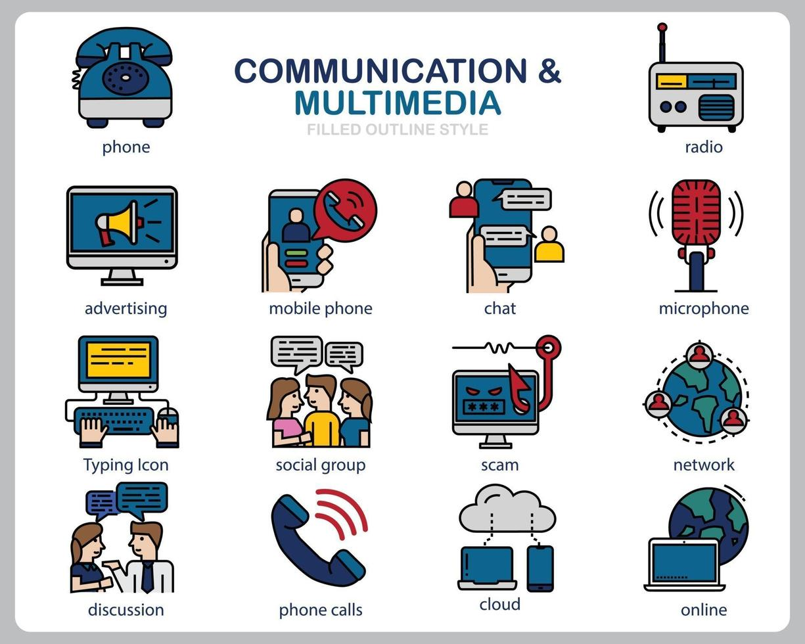

Multimedia is the combination of different forms of media, such as text, audio, video, and images, in a single presentation or application. This allows for a more interactive and engaging experience for the user, as they can access different forms of information in one place.
One example of multimedia is a website that uses text, images, and video to provide information about a topic. This allows the user to read about the topic, see relevant images, and watch a video to learn more about it.
Another example is a video game that uses sound effects, music, and visual graphics to create an immersive experience for the player. This allows the user to engage with the game on multiple levels, making it more engaging and enjoyable.
Multimedia can also be used in education, such as in e-learning courses that combine text, audio, and video to provide information and support learning. This allows students to access different forms of information in one place, making it more convenient and efficient for learning.
In conclusion, multimedia is the combination of different forms of media in a single presentation or application. This allows for a more interactive and engaging experience for the user, and can be used in various fields, such as websites, video games, and education.
Sources:
"What is Multimedia?" National Science Foundation.
"The Importance of Multimedia in Education." EdTech Magazine.